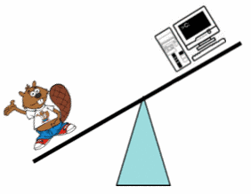

On sait que :
Laquelle de ces affirmations est vraie :
La bonne réponse est A.
La première image nous montre que le Castor est plus lourd que l'ordinateur. La seconde image nous montre qu'il faut deux Castors pour égaler le poid d'un combiné de téléphone. Ce dernier est donc plus lourd que le Castor.
Dans les programmes informatiques, on écrit des instructions qui seront ensuite exécutées par l'ordinateur.
Certaines instructions sont dîtes conditionnelles : elles ne sont exécutées que si une certaine condition attachée à l'instruction est vérifiée. Une telle condition prend généralement la forme des affirmations proposées dans cet exercice : si A est inférieur à B et B inférieur à C alors...A force d'accumuler les 'et' et les 'ou' dans ces instructions, les programmes deviennent particulièrement délicats à écrire et les erreurs sont fréquentes.